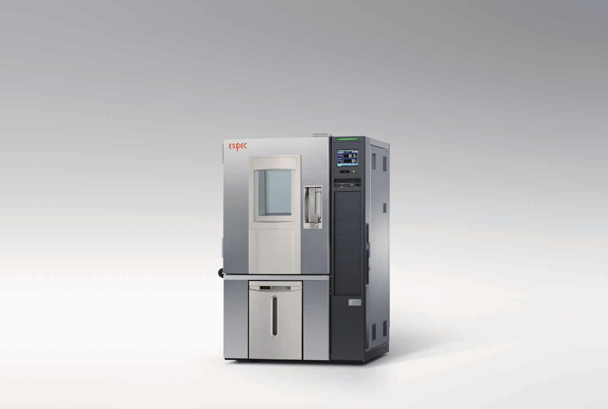
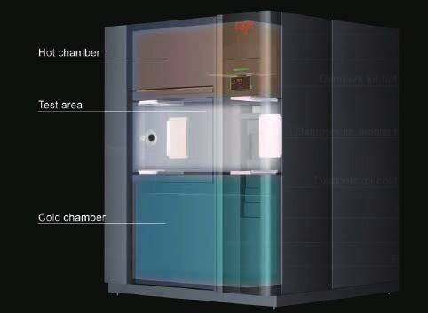
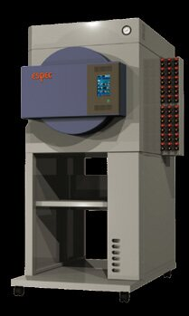
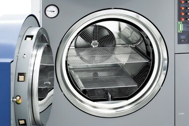

Solution
전체 솔루션 보기
산업별 신뢰성 솔루션
장비 이름을 몰라도 괜찮습니다. 산업 분야를 고르면 필요한 시험과 맞는 장비를 보여 드립니다.

제이에스 엔지니어링, ESPEC 한국 단독 총대리점1981년 설립, 올해로 45년. Platinous J 항온항습기를 비롯한 환경시험 장비를 공급합니다.
장비 이름을 몰라도 괜찮습니다. 산업 분야를 고르면 필요한 시험과 맞는 장비를 보여 드립니다.
제품 사양은 ESPEC 공개 자료(수집일 2026-10-29) 기준입니다. 최신 사양과 국내 공급 사양은 제이에스 엔지니어링에 문의해 주세요.


열충격 시험기 단면
HAST 시험기 EHS
HAST 시험조 내부 워크인 챔버 내부
워크인 챔버 내부시험 조건, 시료 크기, 규격에 맞는 장비를 함께 고릅니다. 한국어 상담부터 설치, A/S까지 한곳에서 맡습니다.
환경시험기기. 1981년 한국 총판 대리점 계약, 1994년 항온기 기술 제휴.
진동 시험기. 1981년 한국 대리점 계약.
주요 거래처는 준비되는 대로 안내합니다.